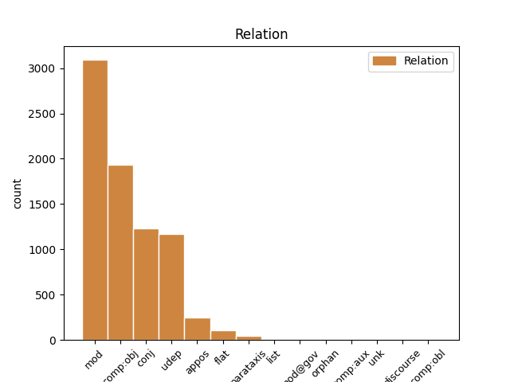
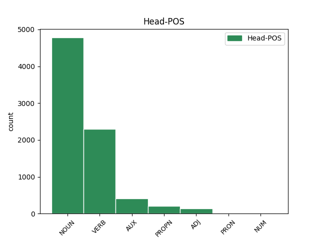
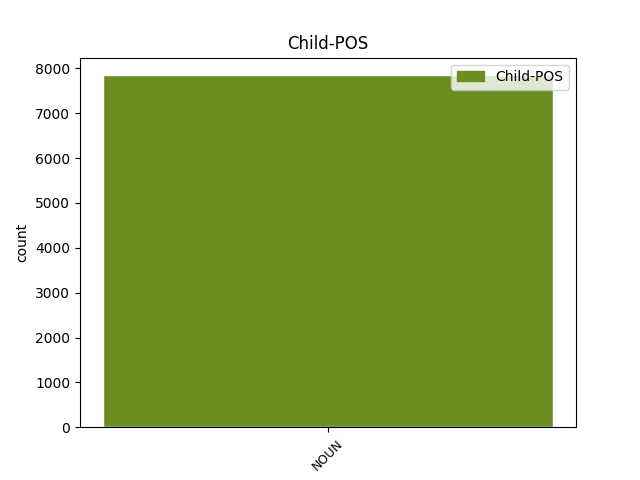

Distribution of features within this leaf



Agreement Rules sorted by frequency.
- When the dependent token is the modifer(mod) of the head token, and the head token is NOUN and the dependent token is NOUN.
1 Slična _ _ _ _ 0 _ _ _
2 debata _ _ _ _ 0 _ _ _
3 o _ _ _ _ 0 _ _ _
4 korisnosti _ _ _ _ 0 _ _ _
5 naspram _ _ _ _ 0 _ _ _
6 štetnosti _ _ _ _ 0 _ _ _
7 nove _ _ _ _ 0 _ _ _
8 tehnologije _ _ _ _ 0 _ _ _
9 se _ _ _ _ 0 _ _ _
10 dugo _ _ _ _ 0 _ _ _
11 vodi _ _ _ _ 0 _ _ _
12 i _ _ _ _ 0 _ _ _
13 po _ _ _ _ 0 _ _ _
14 pitanju _ _ _ _ 0 _ _ _
15 opravdanosti opravdanost NOUN Ncfsg Case=Gen|Gender=Fem|Number=Sing 0 _ _ _
16 korišćenja korišćenje NOUN Ncnsg Case=Gen|Gender=Neut|Number=Sing 15 mod _ _
17 nuklearne _ _ _ _ 0 _ _ _
18 energije _ _ _ _ 0 _ _ _
19 s _ _ _ _ 0 _ _ _
20 obzirom _ _ _ _ 0 _ _ _
21 na _ _ _ _ 0 _ _ _
22 zastrašujuće _ _ _ _ 0 _ _ _
23 posledice _ _ _ _ 0 _ _ _
24 koje _ _ _ _ 0 _ _ _
25 kvar _ _ _ _ 0 _ _ _
26 u _ _ _ _ 0 _ _ _
27 tako _ _ _ _ 0 _ _ _
28 osetljivom _ _ _ _ 0 _ _ _
29 sistemu _ _ _ _ 0 _ _ _
30 može _ _ _ _ 0 _ _ _
31 da _ _ _ _ 0 _ _ _
32 ima _ _ _ _ 0 _ _ _
33 . _ _ _ _ 0 _ _ _
1 Ovo _ _ _ _ 0 _ _ _
2 uveliko _ _ _ _ 0 _ _ _
3 olakšava olakšavati VERB Vmr3s Mood=Ind|Number=Sing|Person=3|Tense=Pres|VerbForm=Fin 0 _ _ _
4 deljenje deljenje NOUN Ncnsa Case=Acc|Gender=Neut|Number=Sing 3 comp:obj _ _
5 informacija _ _ _ _ 0 _ _ _
6 između _ _ _ _ 0 _ _ _
7 sistema _ _ _ _ 0 _ _ _
8 i _ _ _ _ 0 _ _ _
9 pojedinaca _ _ _ _ 0 _ _ _
10 , _ _ _ _ 0 _ _ _
11 ali _ _ _ _ 0 _ _ _
12 i _ _ _ _ 0 _ _ _
13 štetu _ _ _ _ 0 _ _ _
14 od _ _ _ _ 0 _ _ _
15 hakera _ _ _ _ 0 _ _ _
16 . _ _ _ _ 0 _ _ _
1 Najprizemniji _ _ _ _ 0 _ _ _
2 primer _ _ _ _ 0 _ _ _
3 ove _ _ _ _ 0 _ _ _
4 opasnosti _ _ _ _ 0 _ _ _
5 je _ _ _ _ 0 _ _ _
6 skandal _ _ _ _ 0 _ _ _
7 iz _ _ _ _ 0 _ _ _
8 2014. _ _ _ _ 0 _ _ _
9 kada _ _ _ _ 0 _ _ _
10 su _ _ _ _ 0 _ _ _
11 ukradeni _ _ _ _ 0 _ _ _
12 i _ _ _ _ 0 _ _ _
13 objavljeni _ _ _ _ 0 _ _ _
14 privatni _ _ _ _ 0 _ _ _
15 obnaženi _ _ _ _ 0 _ _ _
16 selfiji _ _ _ _ 0 _ _ _
17 poznatih _ _ _ _ 0 _ _ _
18 osoba _ _ _ _ 0 _ _ _
19 iz _ _ _ _ 0 _ _ _
20 sveta _ _ _ _ 0 _ _ _
21 filma film NOUN Ncmsg Case=Gen|Gender=Masc|Number=Sing 0 _ _ _
22 i _ _ _ _ 0 _ _ _
23 pop _ _ _ _ 0 _ _ _
24 kulture kultura NOUN Ncfsg Case=Gen|Gender=Fem|Number=Sing 21 conj _ SpaceAfter=No
25 , _ _ _ _ 0 _ _ _
26 koji _ _ _ _ 0 _ _ _
27 su _ _ _ _ 0 _ _ _
28 bili _ _ _ _ 0 _ _ _
29 pohranjeni _ _ _ _ 0 _ _ _
30 na _ _ _ _ 0 _ _ _
31 oblaku _ _ _ _ 0 _ _ _
32 podataka _ _ _ _ 0 _ _ _
33 u _ _ _ _ 0 _ _ _
34 koji _ _ _ _ 0 _ _ _
35 su _ _ _ _ 0 _ _ _
36 hakeri _ _ _ _ 0 _ _ _
37 upali _ _ _ _ 0 _ _ _
1 Smatra _ _ _ _ 0 _ _ _
2 se _ _ _ _ 0 _ _ _
3 da _ _ _ _ 0 _ _ _
4 je biti AUX Var3s Mood=Ind|Number=Sing|Person=3|Tense=Pres|VerbForm=Fin 0 _ _ _
5 i _ _ _ _ 0 _ _ _
6 ovaj _ _ _ _ 0 _ _ _
7 incident _ _ _ _ 0 _ _ _
8 doprineo _ _ _ _ 0 _ _ _
9 njenom _ _ _ _ 0 _ _ _
10 porazu poraz NOUN Ncmsd Case=Dat|Gender=Masc|Number=Sing 4 udep _ _
11 na _ _ _ _ 0 _ _ _
12 izborima _ _ _ _ 0 _ _ _
13 . _ _ _ _ 0 _ _ _
1 Slična _ _ _ _ 0 _ _ _
2 debata _ _ _ _ 0 _ _ _
3 o _ _ _ _ 0 _ _ _
4 korisnosti _ _ _ _ 0 _ _ _
5 naspram _ _ _ _ 0 _ _ _
6 štetnosti _ _ _ _ 0 _ _ _
7 nove _ _ _ _ 0 _ _ _
8 tehnologije _ _ _ _ 0 _ _ _
9 se _ _ _ _ 0 _ _ _
10 dugo _ _ _ _ 0 _ _ _
11 vodi _ _ _ _ 0 _ _ _
12 i _ _ _ _ 0 _ _ _
13 po _ _ _ _ 0 _ _ _
14 pitanju _ _ _ _ 0 _ _ _
15 opravdanosti _ _ _ _ 0 _ _ _
16 korišćenja korišćenje NOUN Ncnsg Case=Gen|Gender=Neut|Number=Sing 0 _ _ _
17 nuklearne _ _ _ _ 0 _ _ _
18 energije energija NOUN Ncfsg Case=Gen|Gender=Fem|Number=Sing 16 udep _ _
19 s _ _ _ _ 0 _ _ _
20 obzirom _ _ _ _ 0 _ _ _
21 na _ _ _ _ 0 _ _ _
22 zastrašujuće _ _ _ _ 0 _ _ _
23 posledice _ _ _ _ 0 _ _ _
24 koje _ _ _ _ 0 _ _ _
25 kvar _ _ _ _ 0 _ _ _
26 u _ _ _ _ 0 _ _ _
27 tako _ _ _ _ 0 _ _ _
28 osetljivom _ _ _ _ 0 _ _ _
29 sistemu _ _ _ _ 0 _ _ _
30 može _ _ _ _ 0 _ _ _
31 da _ _ _ _ 0 _ _ _
32 ima _ _ _ _ 0 _ _ _
33 . _ _ _ _ 0 _ _ _
1 Ako _ _ _ _ 0 _ _ _
2 je _ _ _ _ 0 _ _ _
3 moguće _ _ _ _ 0 _ _ _
4 da _ _ _ _ 0 _ _ _
5 neko _ _ _ _ 0 _ _ _
6 uhakuje _ _ _ _ 0 _ _ _
7 vaš _ _ _ _ 0 _ _ _
8 toster _ _ _ _ 0 _ _ _
9 i _ _ _ _ 0 _ _ _
10 preko _ _ _ _ 0 _ _ _
11 njega _ _ _ _ 0 _ _ _
12 dođe _ _ _ _ 0 _ _ _
13 do _ _ _ _ 0 _ _ _
14 intimnih _ _ _ _ 0 _ _ _
15 podataka _ _ _ _ 0 _ _ _
16 o _ _ _ _ 0 _ _ _
17 vama _ _ _ _ 0 _ _ _
18 ili _ _ _ _ 0 _ _ _
19 hakovanjem hakovanje NOUN Ncnsi Case=Ins|Gender=Neut|Number=Sing 23 udep _ _
20 autopilota _ _ _ _ 0 _ _ _
21 u _ _ _ _ 0 _ _ _
22 kolima _ _ _ _ 0 _ _ _
23 može moći VERB Vmr3s Mood=Ind|Number=Sing|Person=3|Tense=Pres|VerbForm=Fin 0 _ _ _
24 da _ _ _ _ 0 _ _ _
25 se _ _ _ _ 0 _ _ _
26 počini _ _ _ _ 0 _ _ _
27 ubistvo _ _ _ _ 0 _ _ _
28 , _ _ _ _ 0 _ _ _
29 koliku _ _ _ _ 0 _ _ _
30 opasnost _ _ _ _ 0 _ _ _
31 onda _ _ _ _ 0 _ _ _
32 nosi _ _ _ _ 0 _ _ _
33 hakovanje _ _ _ _ 0 _ _ _
34 infrastrukture _ _ _ _ 0 _ _ _
35 ili _ _ _ _ 0 _ _ _
36 bolnica _ _ _ _ 0 _ _ _
37 ili _ _ _ _ 0 _ _ _
38 nuklearnih _ _ _ _ 0 _ _ _
39 silosa _ _ _ _ 0 _ _ _
40 ? _ _ _ _ 0 _ _ _
1 Odgovor _ _ _ _ 0 _ _ _
2 na _ _ _ _ 0 _ _ _
3 ovo _ _ _ _ 0 _ _ _
4 pitanje _ _ _ _ 0 _ _ _
5 mnoge _ _ _ _ 0 _ _ _
6 kompanije _ _ _ _ 0 _ _ _
7 i _ _ _ _ 0 _ _ _
8 pojedinci _ _ _ _ 0 _ _ _
9 danas _ _ _ _ 0 _ _ _
10 vide _ _ _ _ 0 _ _ _
11 u _ _ _ _ 0 _ _ _
12 takozvanom _ _ _ _ 0 _ _ _
13 računarstvu računarstvo NOUN Ncnsl Case=Loc|Gender=Neut|Number=Sing 0 _ _ _
14 u _ _ _ _ 0 _ _ _
15 oblaku _ _ _ _ 0 _ _ _
16 odnosno _ _ _ _ 0 _ _ _
17 klaud _ _ _ _ 0 _ _ _
18 tehnologiji tehnologija NOUN Ncfsl Case=Loc|Gender=Fem|Number=Sing 13 appos _ SpaceAfter=No
19 . _ _ _ _ 0 _ _ _
1 Blek Blek PROPN Npmsn Case=Nom|Gender=Masc|Number=Sing 0 _ _ _
2 Het _ _ _ _ 0 _ _ _
3 , _ _ _ _ 0 _ _ _
4 odnosno _ _ _ _ 0 _ _ _
5 Crni _ _ _ _ 0 _ _ _
6 šešir šešir NOUN Ncmsn Case=Nom|Gender=Masc|Number=Sing 1 appos _ _
7 je _ _ _ _ 0 _ _ _
8 termin _ _ _ _ 0 _ _ _
9 za _ _ _ _ 0 _ _ _
10 hakera _ _ _ _ 0 _ _ _
11 koji _ _ _ _ 0 _ _ _
12 koristi _ _ _ _ 0 _ _ _
13 svoje _ _ _ _ 0 _ _ _
14 umeće _ _ _ _ 0 _ _ _
15 u _ _ _ _ 0 _ _ _
16 ilegalne _ _ _ _ 0 _ _ _
17 svrhe _ _ _ _ 0 _ _ _
18 . _ _ _ _ 0 _ _ _
1 Dovoljno _ _ _ _ 0 _ _ _
2 je _ _ _ _ 0 _ _ _
3 samo _ _ _ _ 0 _ _ _
4 pomenuti _ _ _ _ 0 _ _ _
5 Pod _ _ _ _ 0 _ _ _
6 vulkanom _ _ _ _ 0 _ _ _
7 Malkolma _ _ _ _ 0 _ _ _
8 Laurija _ _ _ _ 0 _ _ _
9 , _ _ _ _ 0 _ _ _
10 Zenovu _ _ _ _ 0 _ _ _
11 svest _ _ _ _ 0 _ _ _
12 Itala _ _ _ _ 0 _ _ _
13 Zveva _ _ _ _ 0 _ _ _
14 , _ _ _ _ 0 _ _ _
15 O _ _ _ _ 0 _ _ _
16 junacima _ _ _ _ 0 _ _ _
17 i _ _ _ _ 0 _ _ _
18 grobovima _ _ _ _ 0 _ _ _
19 Ernesta _ _ _ _ 0 _ _ _
20 Sabata _ _ _ _ 0 _ _ _
21 , _ _ _ _ 0 _ _ _
22 Džojsov _ _ _ _ 0 _ _ _
23 Uliks Uliks PROPN Npmsan Animacy=Inan|Case=Acc|Gender=Masc|Number=Sing 0 _ _ _
24 ili _ _ _ _ 0 _ _ _
25 Maestra maestro NOUN Ncmsay Animacy=Anim|Case=Acc|Gender=Masc|Number=Sing 23 conj _ _
26 i _ _ _ _ 0 _ _ _
27 Margaritu _ _ _ _ 0 _ _ _
28 Bulgakova _ _ _ _ 0 _ _ _
29 . _ _ _ _ 0 _ _ _
1 Univerzitet _ _ _ _ 0 _ _ _
2 Svetog _ _ _ _ 0 _ _ _
3 Ćirila _ _ _ _ 0 _ _ _
4 i _ _ _ _ 0 _ _ _
5 Metodija _ _ _ _ 0 _ _ _
6 u _ _ _ _ 0 _ _ _
7 Skoplju _ _ _ _ 0 _ _ _
8 otvoriće _ _ _ _ 0 _ _ _
9 četiri _ _ _ _ 0 _ _ _
10 odeljenja _ _ _ _ 0 _ _ _
11 -- _ _ _ _ 0 _ _ _
12 za _ _ _ _ 0 _ _ _
13 studije _ _ _ _ 0 _ _ _
14 kompjuterskih _ _ _ _ 0 _ _ _
15 nauka _ _ _ _ 0 _ _ _
16 , _ _ _ _ 0 _ _ _
17 poslovne _ _ _ _ 0 _ _ _
18 administracije _ _ _ _ 0 _ _ _
19 , _ _ _ _ 0 _ _ _
20 diplomatije _ _ _ _ 0 _ _ _
21 i _ _ _ _ 0 _ _ _
22 poljoprivrede _ _ _ _ 0 _ _ _
23 -- _ _ _ _ 0 _ _ _
24 u _ _ _ _ 0 _ _ _
25 Abu _ _ _ _ 0 _ _ _
26 Dabiju _ _ _ _ 0 _ _ _
27 , _ _ _ _ 0 _ _ _
28 u _ _ _ _ 0 _ _ _
29 Ujedinjenim ujedinjen ADJ Agpmply Case=Loc|Definite=Def|Degree=Pos|Gender=Masc|Number=Plur 0 _ _ _
30 Arapskim _ _ _ _ 0 _ _ _
31 Emiratima emirat NOUN Ncmpl Case=Loc|Gender=Masc|Number=Plur 29 flat _ SpaceAfter=No
32 . _ _ _ _ 0 _ _ _
1 Iz _ _ _ _ 0 _ _ _
2 ovog _ _ _ _ 0 _ _ _
3 razloga _ _ _ _ 0 _ _ _
4 velika _ _ _ _ 0 _ _ _
5 industrija _ _ _ _ 0 _ _ _
6 na _ _ _ _ 0 _ _ _
7 Zapadu _ _ _ _ 0 _ _ _
8 na _ _ _ _ 0 _ _ _
9 primer _ _ _ _ 0 _ _ _
10 već _ _ _ _ 0 _ _ _
11 neko _ _ _ _ 0 _ _ _
12 vreme _ _ _ _ 0 _ _ _
13 radi _ _ _ _ 0 _ _ _
14 na _ _ _ _ 0 _ _ _
15 konceptu koncept NOUN Ncmsl Case=Loc|Gender=Masc|Number=Sing 0 _ _ _
16 Fabrika fabrika NOUN Ncfsn Case=Nom|Gender=Fem|Number=Sing 15 flat _ _
17 4.0 _ _ _ _ 0 _ _ _
18 , _ _ _ _ 0 _ _ _
19 koji _ _ _ _ 0 _ _ _
20 predviđa _ _ _ _ 0 _ _ _
21 ubrzan _ _ _ _ 0 _ _ _
22 razvoj _ _ _ _ 0 _ _ _
23 pametnih _ _ _ _ 0 _ _ _
24 fabrika _ _ _ _ 0 _ _ _
25 , _ _ _ _ 0 _ _ _
26 koje _ _ _ _ 0 _ _ _
27 će _ _ _ _ 0 _ _ _
28 se _ _ _ _ 0 _ _ _
29 oslanjati _ _ _ _ 0 _ _ _
30 na _ _ _ _ 0 _ _ _
31 automatizaciju _ _ _ _ 0 _ _ _
32 proizvodnje _ _ _ _ 0 _ _ _
33 i _ _ _ _ 0 _ _ _
34 međusobnu _ _ _ _ 0 _ _ _
35 razmenu _ _ _ _ 0 _ _ _
36 podataka _ _ _ _ 0 _ _ _
37 radi _ _ _ _ 0 _ _ _
38 povećanja _ _ _ _ 0 _ _ _
39 efikasnosti _ _ _ _ 0 _ _ _
40 poslovanja _ _ _ _ 0 _ _ _
41 . _ _ _ _ 0 _ _ _
1 I _ _ _ _ 0 _ _ _
2 ne _ _ _ _ 0 _ _ _
3 samo _ _ _ _ 0 _ _ _
4 da _ _ _ _ 0 _ _ _
5 će _ _ _ _ 0 _ _ _
6 modelirati _ _ _ _ 0 _ _ _
7 njihove _ _ _ _ 0 _ _ _
8 sudbine _ _ _ _ 0 _ _ _
9 prema _ _ _ _ 0 _ _ _
10 parametrima _ _ _ _ 0 _ _ _
11 vlastitog _ _ _ _ 0 _ _ _
12 univerzuma _ _ _ _ 0 _ _ _
13 , _ _ _ _ 0 _ _ _
14 već _ _ _ _ 0 _ _ _
15 će _ _ _ _ 0 _ _ _
16 ti _ _ _ _ 0 _ _ _
17 modeli _ _ _ _ 0 _ _ _
18 upisani _ _ _ _ 0 _ _ _
19 u _ _ _ _ 0 _ _ _
20 talog _ _ _ _ 0 _ _ _
21 čitaočevog _ _ _ _ 0 _ _ _
22 iskustva _ _ _ _ 0 _ _ _
23 na _ _ _ _ 0 _ _ _
24 neki _ _ _ _ 0 _ _ _
25 posredan _ _ _ _ 0 _ _ _
26 način _ _ _ _ 0 _ _ _
27 postati _ _ _ _ 0 _ _ _
28 orijentiri _ _ _ _ 0 _ _ _
29 jedne _ _ _ _ 0 _ _ _
30 umetnošću umetnost NOUN Ncfsi Case=Ins|Gender=Fem|Number=Sing 31 udep _ _
31 nadograđene nadograditi ADJ Appfsgy Case=Gen|Definite=Def|Degree=Pos|Gender=Fem|Number=Sing|VerbForm=Part|Voice=Pass 0 _ _ _
32 stvarnosti _ _ _ _ 0 _ _ _
33 . _ _ _ _ 0 _ _ _
1 Pored _ _ _ _ 0 _ _ _
2 glavne _ _ _ _ 0 _ _ _
3 kancelarije _ _ _ _ 0 _ _ _
4 u _ _ _ _ 0 _ _ _
5 Sarajevu _ _ _ _ 0 _ _ _
6 , _ _ _ _ 0 _ _ _
7 OHR _ _ _ _ 0 _ _ _
8 takođe _ _ _ _ 0 _ _ _
9 ima _ _ _ _ 0 _ _ _
10 terenske _ _ _ _ 0 _ _ _
11 kancelarije _ _ _ _ 0 _ _ _
12 u _ _ _ _ 0 _ _ _
13 Banja Banja PROPN Npfsl Case=Loc|Gender=Fem|Number=Sing 0 _ _ _
14 Luci luka NOUN Ncfsl Case=Loc|Gender=Fem|Number=Sing 13 flat _ SpaceAfter=No
15 , _ _ _ _ 0 _ _ _
16 Mostaru _ _ _ _ 0 _ _ _
17 , _ _ _ _ 0 _ _ _
18 Brčkom _ _ _ _ 0 _ _ _
19 , _ _ _ _ 0 _ _ _
20 Tuzli _ _ _ _ 0 _ _ _
21 i _ _ _ _ 0 _ _ _
22 sedam _ _ _ _ 0 _ _ _
23 drugih _ _ _ _ 0 _ _ _
24 gradova _ _ _ _ 0 _ _ _
25 u _ _ _ _ 0 _ _ _
26 BiH _ _ _ _ 0 _ _ _
27 . _ _ _ _ 0 _ _ _
1 Takođe _ _ _ _ 0 _ _ _
2 ove _ _ _ _ 0 _ _ _
3 nedelje nedelja NOUN Ncfsg Case=Gen|Gender=Fem|Number=Sing 10 parataxis _ SpaceAfter=No
4 : _ _ _ _ 0 _ _ _
5 predsedavajući _ _ _ _ 0 _ _ _
6 Predsedništva _ _ _ _ 0 _ _ _
7 BiH _ _ _ _ 0 _ _ _
8 Željko _ _ _ _ 0 _ _ _
9 Komšić _ _ _ _ 0 _ _ _
10 otvorio otvoriti VERB Vmp-sm Gender=Masc|Number=Sing|Tense=Past|VerbForm=Part|Voice=Act 0 _ _ _
11 svoj _ _ _ _ 0 _ _ _
12 blog _ _ _ _ 0 _ _ _
13 . _ _ _ _ 0 _ _ _
1 Društvo _ _ _ _ 0 _ _ _
2 , _ _ _ _ 0 _ _ _
3 tzv. _ _ _ _ 0 _ _ _
4 obični _ _ _ _ 0 _ _ _
5 ljudi _ _ _ _ 0 _ _ _
6 , _ _ _ _ 0 _ _ _
7 često _ _ _ _ 0 _ _ _
8 su _ _ _ _ 0 _ _ _
9 pokvareni pokvariti ADJ Appmpny Case=Nom|Definite=Def|Degree=Pos|Gender=Masc|Number=Plur|VerbForm=Part|Voice=Pass 0 _ _ _
10 koliko _ _ _ _ 0 _ _ _
11 i _ _ _ _ 0 _ _ _
12 sami _ _ _ _ 0 _ _ _
13 zločinci zločinac NOUN Ncmpn Case=Nom|Gender=Masc|Number=Plur 9 mod _ SpaceAfter=No
14 , _ _ _ _ 0 _ _ _
15 pa _ _ _ _ 0 _ _ _
16 nije _ _ _ _ 0 _ _ _
17 dovoljno _ _ _ _ 0 _ _ _
18 samo _ _ _ _ 0 _ _ _
19 prstom _ _ _ _ 0 _ _ _
20 pokazati _ _ _ _ 0 _ _ _
21 na _ _ _ _ 0 _ _ _
22 ubicu _ _ _ _ 0 _ _ _
23 , _ _ _ _ 0 _ _ _
24 već _ _ _ _ 0 _ _ _
25 ga _ _ _ _ 0 _ _ _
26 treba _ _ _ _ 0 _ _ _
27 lično _ _ _ _ 0 _ _ _
28 uhvatiti _ _ _ _ 0 _ _ _
29 , _ _ _ _ 0 _ _ _
30 kazniti _ _ _ _ 0 _ _ _
31 , _ _ _ _ 0 _ _ _
32 a _ _ _ _ 0 _ _ _
33 nekada _ _ _ _ 0 _ _ _
34 i _ _ _ _ 0 _ _ _
35 pustiti _ _ _ _ 0 _ _ _
36 , _ _ _ _ 0 _ _ _
37 ako _ _ _ _ 0 _ _ _
38 se _ _ _ _ 0 _ _ _
39 ispostavi _ _ _ _ 0 _ _ _
40 da _ _ _ _ 0 _ _ _
41 je _ _ _ _ 0 _ _ _
42 manje _ _ _ _ 0 _ _ _
43 kriv _ _ _ _ 0 _ _ _
44 od _ _ _ _ 0 _ _ _
45 žrtve _ _ _ _ 0 _ _ _
46 . _ _ _ _ 0 _ _ _
1 Ulica _ _ _ _ 0 _ _ _
2 u _ _ _ _ 0 _ _ _
3 kojoj _ _ _ _ 0 _ _ _
4 smo _ _ _ _ 0 _ _ _
5 odrasli _ _ _ _ 0 _ _ _
6 , _ _ _ _ 0 _ _ _
7 i _ _ _ _ 0 _ _ _
8 koju _ _ _ _ 0 _ _ _
9 smo _ _ _ _ 0 _ _ _
10 napustili _ _ _ _ 0 _ _ _
11 , _ _ _ _ 0 _ _ _
12 da _ _ _ _ 0 _ _ _
13 bismo _ _ _ _ 0 _ _ _
14 se _ _ _ _ 0 _ _ _
15 nakon _ _ _ _ 0 _ _ _
16 tri _ _ _ _ 0 _ _ _
17 , _ _ _ _ 0 _ _ _
18 ili _ _ _ _ 0 _ _ _
19 četiri _ _ _ _ 0 _ _ _
20 decenije _ _ _ _ 0 _ _ _
21 ponovo _ _ _ _ 0 _ _ _
22 vratili _ _ _ _ 0 _ _ _
23 , _ _ _ _ 0 _ _ _
24 nije _ _ _ _ 0 _ _ _
25 ista _ _ _ _ 0 _ _ _
26 ulica _ _ _ _ 0 _ _ _
27 , _ _ _ _ 0 _ _ _
28 zatrpana _ _ _ _ 0 _ _ _
29 je _ _ _ _ 0 _ _ _
30 životima _ _ _ _ 0 _ _ _
31 koji _ _ _ _ 0 _ _ _
32 su _ _ _ _ 0 _ _ _
33 se _ _ _ _ 0 _ _ _
34 odvijali _ _ _ _ 0 _ _ _
35 u _ _ _ _ 0 _ _ _
36 našem _ _ _ _ 0 _ _ _
37 odsustvu _ _ _ _ 0 _ _ _
38 , _ _ _ _ 0 _ _ _
39 i _ _ _ _ 0 _ _ _
40 zalud _ _ _ _ 0 _ _ _
41 ćemo _ _ _ _ 0 _ _ _
42 u _ _ _ _ 0 _ _ _
43 detalju _ _ _ _ 0 _ _ _
44 sa _ _ _ _ 0 _ _ _
45 fasade _ _ _ _ 0 _ _ _
46 neke _ _ _ _ 0 _ _ _
47 kuće _ _ _ _ 0 _ _ _
48 koji _ _ _ _ 0 _ _ _
49 je _ _ _ _ 0 _ _ _
50 ostao _ _ _ _ 0 _ _ _
51 nepromenjen _ _ _ _ 0 _ _ _
52 , _ _ _ _ 0 _ _ _
53 i _ _ _ _ 0 _ _ _
54 lebdi _ _ _ _ 0 _ _ _
55 u _ _ _ _ 0 _ _ _
56 bezmerju bezmerje PROPN Npnsl Case=Loc|Gender=Neut|Number=Sing 0 _ _ _
57 našeg _ _ _ _ 0 _ _ _
58 pamćenja pamćenje NOUN Ncnsg Case=Gen|Gender=Neut|Number=Sing 56 mod _ _
59 kao _ _ _ _ 0 _ _ _
60 parče _ _ _ _ 0 _ _ _
61 jarbola _ _ _ _ 0 _ _ _
62 nakon _ _ _ _ 0 _ _ _
63 brodoloma _ _ _ _ 0 _ _ _
64 , _ _ _ _ 0 _ _ _
65 pokušavati _ _ _ _ 0 _ _ _
66 da _ _ _ _ 0 _ _ _
67 uspostavimo _ _ _ _ 0 _ _ _
68 ulicu _ _ _ _ 0 _ _ _
69 koje _ _ _ _ 0 _ _ _
70 više _ _ _ _ 0 _ _ _
71 nema _ _ _ _ 0 _ _ _
72 . _ _ _ _ 0 _ _ _
1 Za _ _ _ _ 0 _ _ _
2 mene _ _ _ _ 0 _ _ _
3 grad _ _ _ _ 0 _ _ _
4 Madrid _ _ _ _ 0 _ _ _
5 predstavlja _ _ _ _ 0 _ _ _
6 simbol _ _ _ _ 0 _ _ _
7 mnogih _ _ _ _ 0 _ _ _
8 stvari _ _ _ _ 0 _ _ _
9 -- _ _ _ _ 0 _ _ _
10 mladosti mladost NOUN Ncfsg Case=Gen|Gender=Fem|Number=Sing 0 _ _ _
11 , _ _ _ _ 0 _ _ _
12 doma _ _ _ _ 0 _ _ _
13 , _ _ _ _ 0 _ _ _
14 porodice _ _ _ _ 0 _ _ _
15 i _ _ _ _ 0 _ _ _
16 prijateljstva prijateljstvo NOUN Ncnsg Case=Gen|Gender=Neut|Number=Sing 10 list _ SpaceAfter=No
17 " _ _ _ _ 0 _ _ _
18 , _ _ _ _ 0 _ _ _
19 rekao _ _ _ _ 0 _ _ _
20 je _ _ _ _ 0 _ _ _
21 bugarski _ _ _ _ 0 _ _ _
22 lider _ _ _ _ 0 _ _ _
23 primajući _ _ _ _ 0 _ _ _
24 nagradu _ _ _ _ 0 _ _ _
25 . _ _ _ _ 0 _ _ _
1 Serotonin _ _ _ _ 0 _ _ _
2 , _ _ _ _ 0 _ _ _
3 hormon _ _ _ _ 0 _ _ _
4 koga _ _ _ _ 0 _ _ _
5 luči _ _ _ _ 0 _ _ _
6 nekoliko _ _ _ _ 0 _ _ _
7 stotina stotina NOUN Ncfpg Case=Gen|Gender=Fem|Number=Plur 8 mod@gov _ _
8 hiljada hiljada NOUN Ncfpg Case=Gen|Gender=Fem|Number=Plur 0 _ _ _
9 neurona _ _ _ _ 0 _ _ _
10 srednjeg _ _ _ _ 0 _ _ _
11 mozga _ _ _ _ 0 _ _ _
12 , _ _ _ _ 0 _ _ _
13 naziva _ _ _ _ 0 _ _ _
14 se _ _ _ _ 0 _ _ _
15 ponekad _ _ _ _ 0 _ _ _
16 i _ _ _ _ 0 _ _ _
17 hormonom _ _ _ _ 0 _ _ _
18 sreće _ _ _ _ 0 _ _ _
19 . _ _ _ _ 0 _ _ _
1 Neke _ _ _ _ 0 _ _ _
2 organizacije _ _ _ _ 0 _ _ _
3 , _ _ _ _ 0 _ _ _
4 poput _ _ _ _ 0 _ _ _
5 Društva _ _ _ _ 0 _ _ _
6 za _ _ _ _ 0 _ _ _
7 odgovorno _ _ _ _ 0 _ _ _
8 poslovanje _ _ _ _ 0 _ _ _
9 u _ _ _ _ 0 _ _ _
10 BiH _ _ _ _ 0 _ _ _
11 ( _ _ _ _ 0 _ _ _
12 DOP _ _ _ _ 0 _ _ _
13 ) _ _ _ _ 0 _ _ _
14 , _ _ _ _ 0 _ _ _
15 kažu _ _ _ _ 0 _ _ _
16 da _ _ _ _ 0 _ _ _
17 čak _ _ _ _ 0 _ _ _
18 planiraju _ _ _ _ 0 _ _ _
19 organizovanje _ _ _ _ 0 _ _ _
20 konferencija _ _ _ _ 0 _ _ _
21 na _ _ _ _ 0 _ _ _
22 kojima _ _ _ _ 0 _ _ _
23 bi _ _ _ _ 0 _ _ _
24 političke _ _ _ _ 0 _ _ _
25 stranke stranka NOUN Ncfpn Case=Nom|Gender=Fem|Number=Plur 0 _ _ _
26 -- _ _ _ _ 0 _ _ _
27 pre _ _ _ _ 0 _ _ _
28 svega _ _ _ _ 0 _ _ _
29 predstavnici predstavnik NOUN Ncmpn Case=Nom|Gender=Masc|Number=Plur 25 parataxis _ _
30 podmladaka _ _ _ _ 0 _ _ _
31 stranaka _ _ _ _ 0 _ _ _
32 -- _ _ _ _ 0 _ _ _
33 govorili _ _ _ _ 0 _ _ _
34 o _ _ _ _ 0 _ _ _
35 specifičnim _ _ _ _ 0 _ _ _
36 problemima _ _ _ _ 0 _ _ _
37 sa _ _ _ _ 0 _ _ _
38 kojima _ _ _ _ 0 _ _ _
39 se _ _ _ _ 0 _ _ _
40 suočavaju _ _ _ _ 0 _ _ _
41 mladi _ _ _ _ 0 _ _ _
42 ljudi _ _ _ _ 0 _ _ _
43 . _ _ _ _ 0 _ _ _
1 " _ _ _ _ 0 _ _ _
2 Svesni svesni ADJ Agpmpny Case=Nom|Definite=Def|Degree=Pos|Gender=Masc|Number=Plur 0 _ _ _
3 smo _ _ _ _ 0 _ _ _
4 napora napor NOUN Ncmpg Case=Gen|Gender=Masc|Number=Plur 2 comp:obj _ _
5 koje _ _ _ _ 0 _ _ _
6 je _ _ _ _ 0 _ _ _
7 turska _ _ _ _ 0 _ _ _
8 vlada _ _ _ _ 0 _ _ _
9 uložila _ _ _ _ 0 _ _ _
10 da _ _ _ _ 0 _ _ _
11 bi _ _ _ _ 0 _ _ _
12 ojačala _ _ _ _ 0 _ _ _
13 BiH _ _ _ _ 0 _ _ _
14 na _ _ _ _ 0 _ _ _
15 putu _ _ _ _ 0 _ _ _
16 evroatlantske _ _ _ _ 0 _ _ _
17 integracije _ _ _ _ 0 _ _ _
18 , _ _ _ _ 0 _ _ _
19 a _ _ _ _ 0 _ _ _
20 tu _ _ _ _ 0 _ _ _
21 smatramo _ _ _ _ 0 _ _ _
22 da _ _ _ _ 0 _ _ _
23 je _ _ _ _ 0 _ _ _
24 svaka _ _ _ _ 0 _ _ _
25 pomoć _ _ _ _ 0 _ _ _
26 , _ _ _ _ 0 _ _ _
27 posebno _ _ _ _ 0 _ _ _
28 ta _ _ _ _ 0 _ _ _
29 koju _ _ _ _ 0 _ _ _
30 nude _ _ _ _ 0 _ _ _
31 prijateljske _ _ _ _ 0 _ _ _
32 zemlje _ _ _ _ 0 _ _ _
33 , _ _ _ _ 0 _ _ _
34 dobrodošla _ _ _ _ 0 _ _ _
35 " _ _ _ _ 0 _ _ _
36 , _ _ _ _ 0 _ _ _
37 navodi _ _ _ _ 0 _ _ _
38 se _ _ _ _ 0 _ _ _
39 u _ _ _ _ 0 _ _ _
40 saopštenju _ _ _ _ 0 _ _ _
41 . _ _ _ _ 0 _ _ _
1 Drugim _ _ _ _ 0 _ _ _
2 rečima reč NOUN Ncfpl Case=Loc|Gender=Fem|Number=Plur 5 parataxis _ SpaceAfter=No
3 , _ _ _ _ 0 _ _ _
4 izgubili _ _ _ _ 0 _ _ _
5 smo biti AUX Var1p Mood=Ind|Number=Plur|Person=1|Tense=Pres|VerbForm=Fin 0 _ _ _
6 svoje _ _ _ _ 0 _ _ _
7 mišljenje _ _ _ _ 0 _ _ _
8 . _ _ _ _ 0 _ _ _
1 On on PRON Pp3msn Case=Nom|Gender=Masc|Number=Sing|Person=3|PronType=Prs 0 _ _ _
2 i _ _ _ _ 0 _ _ _
3 njegova _ _ _ _ 0 _ _ _
4 porodica porodica NOUN Ncfsn Case=Nom|Gender=Fem|Number=Sing 1 conj _ SpaceAfter=No
5 , _ _ _ _ 0 _ _ _
6 koji _ _ _ _ 0 _ _ _
7 su _ _ _ _ 0 _ _ _
8 vlasnici _ _ _ _ 0 _ _ _
9 restorana _ _ _ _ 0 _ _ _
10 u _ _ _ _ 0 _ _ _
11 selu _ _ _ _ 0 _ _ _
12 , _ _ _ _ 0 _ _ _
13 ostavljali _ _ _ _ 0 _ _ _
14 su _ _ _ _ 0 _ _ _
15 vekne _ _ _ _ 0 _ _ _
16 starog _ _ _ _ 0 _ _ _
17 hleba _ _ _ _ 0 _ _ _
18 za _ _ _ _ 0 _ _ _
19 tog _ _ _ _ 0 _ _ _
20 čuvenog _ _ _ _ 0 _ _ _
21 nilskog _ _ _ _ 0 _ _ _
22 konja _ _ _ _ 0 _ _ _
23 . _ _ _ _ 0 _ _ _
1 " _ _ _ _ 0 _ _ _
2 Nije _ _ _ _ 0 _ _ _
3 bilo _ _ _ _ 0 _ _ _
4 ekstremnog _ _ _ _ 0 _ _ _
5 siromaštva _ _ _ _ 0 _ _ _
6 , _ _ _ _ 0 _ _ _
7 nije _ _ _ _ 0 _ _ _
8 bilo _ _ _ _ 0 _ _ _
9 droga _ _ _ _ 0 _ _ _
10 , _ _ _ _ 0 _ _ _
11 bilo biti AUX Vap-sn Gender=Neut|Number=Sing|Tense=Past|VerbForm=Part|Voice=Act 0 _ _ _
12 je _ _ _ _ 0 _ _ _
13 mnogo _ _ _ _ 0 _ _ _
14 manje _ _ _ _ 0 _ _ _
15 kriminala kriminal NOUN Ncmsg Case=Gen|Gender=Masc|Number=Sing 11 comp:obj _ _
16 i _ _ _ _ 0 _ _ _
17 više _ _ _ _ 0 _ _ _
18 radnih _ _ _ _ 0 _ _ _
19 mesta _ _ _ _ 0 _ _ _
20 . _ _ _ _ 0 _ _ _
1 Na _ _ _ _ 0 _ _ _
2 Kosovu _ _ _ _ 0 _ _ _
3 , _ _ _ _ 0 _ _ _
4 još _ _ _ _ 0 _ _ _
5 uvek _ _ _ _ 0 _ _ _
6 nerešeni _ _ _ _ 0 _ _ _
7 nacionalni nacionalan ADJ Agpmpny Case=Nom|Definite=Def|Degree=Pos|Gender=Masc|Number=Plur 0 _ _ _
8 i _ _ _ _ 0 _ _ _
9 problemi problem NOUN Ncmpn Case=Nom|Gender=Masc|Number=Plur 7 conj _ _
10 statusa _ _ _ _ 0 _ _ _
11 , _ _ _ _ 0 _ _ _
12 kao _ _ _ _ 0 _ _ _
13 i _ _ _ _ 0 _ _ _
14 široka _ _ _ _ 0 _ _ _
15 reforma _ _ _ _ 0 _ _ _
16 institucija _ _ _ _ 0 _ _ _
17 uslovili _ _ _ _ 0 _ _ _
18 su _ _ _ _ 0 _ _ _
19 da _ _ _ _ 0 _ _ _
20 primarni _ _ _ _ 0 _ _ _
21 metod _ _ _ _ 0 _ _ _
22 privatizacije _ _ _ _ 0 _ _ _
23 bude _ _ _ _ 0 _ _ _
24 lizing _ _ _ _ 0 _ _ _
25 preduzeća _ _ _ _ 0 _ _ _
26 u _ _ _ _ 0 _ _ _
27 društvenoj _ _ _ _ 0 _ _ _
28 svojini _ _ _ _ 0 _ _ _
29 na _ _ _ _ 0 _ _ _
30 99 _ _ _ _ 0 _ _ _
31 godina _ _ _ _ 0 _ _ _
32 . _ _ _ _ 0 _ _ _
1 Mario Mario PROPN Npmsn Case=Nom|Gender=Masc|Number=Sing 0 _ _ _
2 Vargas _ _ _ _ 0 _ _ _
3 Ljosa _ _ _ _ 0 _ _ _
4 : _ _ _ _ 0 _ _ _
5 Diskretni _ _ _ _ 0 _ _ _
6 heroj heroj NOUN Ncmsn Case=Nom|Gender=Masc|Number=Sing 1 parataxis _ _
1 Pad _ _ _ _ 0 _ _ _
2 komunizma _ _ _ _ 0 _ _ _
3 doneo doneti VERB Vmp-sm Gender=Masc|Number=Sing|Tense=Past|VerbForm=Part|Voice=Act 0 _ _ _
4 je _ _ _ _ 0 _ _ _
5 Crnogorcima _ _ _ _ 0 _ _ _
6 višestranačku _ _ _ _ 0 _ _ _
7 demokratiju _ _ _ _ 0 _ _ _
8 , _ _ _ _ 0 _ _ _
9 a _ _ _ _ 0 _ _ _
10 na _ _ _ _ 0 _ _ _
11 kraju _ _ _ _ 0 _ _ _
12 i _ _ _ _ 0 _ _ _
13 nezavisnost nezavisnost NOUN Ncfsa Case=Acc|Gender=Fem|Number=Sing 3 conj _ SpaceAfter=No
14 . _ _ _ _ 0 _ _ _
1 Smatra _ _ _ _ 0 _ _ _
2 se _ _ _ _ 0 _ _ _
3 da _ _ _ _ 0 _ _ _
4 su biti AUX Var3p Mood=Ind|Number=Plur|Person=3|Tense=Pres|VerbForm=Fin 0 _ _ _
5 glijalne _ _ _ _ 0 _ _ _
6 ćelije _ _ _ _ 0 _ _ _
7 evoluciono _ _ _ _ 0 _ _ _
8 podjednako _ _ _ _ 0 _ _ _
9 značajne _ _ _ _ 0 _ _ _
10 za _ _ _ _ 0 _ _ _
11 čoveka _ _ _ _ 0 _ _ _
12 koliko _ _ _ _ 0 _ _ _
13 i _ _ _ _ 0 _ _ _
14 neuroni neuron NOUN Ncmpn Case=Nom|Gender=Masc|Number=Plur 4 mod _ SpaceAfter=No
15 , _ _ _ _ 0 _ _ _
16 a _ _ _ _ 0 _ _ _
17 nakon _ _ _ _ 0 _ _ _
18 deprivacije _ _ _ _ 0 _ _ _
19 sna _ _ _ _ 0 _ _ _
20 aktivirano _ _ _ _ 0 _ _ _
21 ih _ _ _ _ 0 _ _ _
22 je _ _ _ _ 0 _ _ _
23 duplo _ _ _ _ 0 _ _ _
24 više _ _ _ _ 0 _ _ _
25 nego _ _ _ _ 0 _ _ _
26 što _ _ _ _ 0 _ _ _
27 bi _ _ _ _ 0 _ _ _
28 trebalo _ _ _ _ 0 _ _ _
29 . _ _ _ _ 0 _ _ _
1 Tužioci _ _ _ _ 0 _ _ _
2 su _ _ _ _ 0 _ _ _
3 izveli _ _ _ _ 0 _ _ _
4 25 _ _ _ _ 0 _ _ _
5 svedoka _ _ _ _ 0 _ _ _
6 , _ _ _ _ 0 _ _ _
7 koji _ _ _ _ 0 _ _ _
8 su _ _ _ _ 0 _ _ _
9 rekli _ _ _ _ 0 _ _ _
10 da _ _ _ _ 0 _ _ _
11 je _ _ _ _ 0 _ _ _
12 Ramkovski _ _ _ _ 0 _ _ _
13 izbegao _ _ _ _ 0 _ _ _
14 da _ _ _ _ 0 _ _ _
15 plati _ _ _ _ 0 _ _ _
16 4,5 _ _ _ _ 0 _ _ _
17 miliona _ _ _ _ 0 _ _ _
18 evra _ _ _ _ 0 _ _ _
19 poreza _ _ _ _ 0 _ _ _
20 i _ _ _ _ 0 _ _ _
21 da _ _ _ _ 0 _ _ _
22 je _ _ _ _ 0 _ _ _
23 stekao _ _ _ _ 0 _ _ _
24 17,5 _ _ _ _ 0 _ _ _
25 miliona _ _ _ _ 0 _ _ _
26 evra _ _ _ _ 0 _ _ _
27 kroz _ _ _ _ 0 _ _ _
28 prevaru _ _ _ _ 0 _ _ _
29 -- _ _ _ _ 0 _ _ _
30 kao _ _ _ _ 0 _ _ _
31 što _ _ _ _ 0 _ _ _
32 je _ _ _ _ 0 _ _ _
33 izdavanje izdavanje NOUN Ncnsn Case=Nom|Gender=Neut|Number=Sing 0 _ _ _
34 računa račun NOUN Ncmsg Case=Gen|Gender=Masc|Number=Sing 33 comp:obj _ _
35 sa _ _ _ _ 0 _ _ _
36 lažnim _ _ _ _ 0 _ _ _
37 sadržajem _ _ _ _ 0 _ _ _
38 . _ _ _ _ 0 _ _ _
1 Neka _ _ _ _ 0 _ _ _
2 ona on PRON Pp3fsn Case=Nom|Gender=Fem|Number=Sing|Person=3|PronType=Prs 0 _ _ _
3 [ _ _ _ _ 0 _ _ _
4 vlada vlada NOUN Ncfsn Case=Nom|Gender=Fem|Number=Sing 2 parataxis _ SpaceAfter=No
5 ] _ _ _ _ 0 _ _ _
6 nastavi _ _ _ _ 0 _ _ _
7 da _ _ _ _ 0 _ _ _
8 traži _ _ _ _ 0 _ _ _
9 pojas _ _ _ _ 0 _ _ _
10 za _ _ _ _ 0 _ _ _
11 spasavanje _ _ _ _ 0 _ _ _
12 zbog _ _ _ _ 0 _ _ _
13 sopstvene _ _ _ _ 0 _ _ _
14 nekompetentnosti _ _ _ _ 0 _ _ _
15 i _ _ _ _ 0 _ _ _
16 neefektivnosti _ _ _ _ 0 _ _ _
17 " _ _ _ _ 0 _ _ _
18 , _ _ _ _ 0 _ _ _
19 rekao _ _ _ _ 0 _ _ _
20 je _ _ _ _ 0 _ _ _
21 portparol _ _ _ _ 0 _ _ _
22 ND _ _ _ _ 0 _ _ _
23 Janis _ _ _ _ 0 _ _ _
24 Mihelakis _ _ _ _ 0 _ _ _
25 30. _ _ _ _ 0 _ _ _
26 avgusta _ _ _ _ 0 _ _ _
27 . _ _ _ _ 0 _ _ _
1 " _ _ _ _ 0 _ _ _
2 Način _ _ _ _ 0 _ _ _
3 na _ _ _ _ 0 _ _ _
4 koji _ _ _ _ 0 _ _ _
5 ćemo _ _ _ _ 0 _ _ _
6 prikazati _ _ _ _ 0 _ _ _
7 mermere _ _ _ _ 0 _ _ _
8 biće biti VERB Vmf3s Mood=Ind|Number=Sing|Person=3|Tense=Fut|VerbForm=Fin 0 _ _ _
9 stalni _ _ _ _ 0 _ _ _
10 protest protest NOUN Ncmsn Case=Nom|Gender=Masc|Number=Sing 8 comp:aux _ _
11 za _ _ _ _ 0 _ _ _
12 njihov _ _ _ _ 0 _ _ _
13 povratak _ _ _ _ 0 _ _ _
14 " _ _ _ _ 0 _ _ _
15 , _ _ _ _ 0 _ _ _
16 kaže _ _ _ _ 0 _ _ _
17 profesor _ _ _ _ 0 _ _ _
18 Dimitris _ _ _ _ 0 _ _ _
19 Pandermalis _ _ _ _ 0 _ _ _
20 , _ _ _ _ 0 _ _ _
21 predsednik _ _ _ _ 0 _ _ _
22 Organizacije _ _ _ _ 0 _ _ _
23 za _ _ _ _ 0 _ _ _
24 izgradnju _ _ _ _ 0 _ _ _
25 novog _ _ _ _ 0 _ _ _
26 Muzeja _ _ _ _ 0 _ _ _
27 Akropolja _ _ _ _ 0 _ _ _
28 . _ _ _ _ 0 _ _ _
1 Međutim _ _ _ _ 0 _ _ _
2 , _ _ _ _ 0 _ _ _
3 on _ _ _ _ 0 _ _ _
4 je _ _ _ _ 0 _ _ _
5 rekao _ _ _ _ 0 _ _ _
6 da _ _ _ _ 0 _ _ _
7 to _ _ _ _ 0 _ _ _
8 nije biti AUX Var3s Mood=Ind|Number=Sing|Person=3|Polarity=Neg|Tense=Pres|VerbForm=Fin 0 _ _ _
9 njegova _ _ _ _ 0 _ _ _
10 konačna _ _ _ _ 0 _ _ _
11 ponuda ponuda NOUN Ncfsn Case=Nom|Gender=Fem|Number=Sing 8 comp:aux _ SpaceAfter=No
12 . _ _ _ _ 0 _ _ _
1 Lokalna _ _ _ _ 0 _ _ _
2 vlast _ _ _ _ 0 _ _ _
3 Novog _ _ _ _ 0 _ _ _
4 Sada _ _ _ _ 0 _ _ _
5 finansijski _ _ _ _ 0 _ _ _
6 je biti AUX Var3s Mood=Ind|Number=Sing|Person=3|Tense=Pres|VerbForm=Fin 0 _ _ _
7 podržala _ _ _ _ 0 _ _ _
8 festival _ _ _ _ 0 _ _ _
9 , _ _ _ _ 0 _ _ _
10 baš _ _ _ _ 0 _ _ _
11 kao _ _ _ _ 0 _ _ _
12 i _ _ _ _ 0 _ _ _
13 savezna _ _ _ _ 0 _ _ _
14 vlast vlast NOUN Ncfsn Case=Nom|Gender=Fem|Number=Sing 6 conj _ SpaceAfter=No
15 . _ _ _ _ 0 _ _ _
1 Kultura kultura NOUN Ncfsn Case=Nom|Gender=Fem|Number=Sing 7 parataxis _ _
2 i _ _ _ _ 0 _ _ _
3 društvo _ _ _ _ 0 _ _ _
4 : _ _ _ _ 0 _ _ _
5 Rumunski _ _ _ _ 0 _ _ _
6 dvorac _ _ _ _ 0 _ _ _
7 vraćen vratiti ADJ Appmsnn Case=Nom|Definite=Ind|Degree=Pos|Gender=Masc|Number=Sing|VerbForm=Part|Voice=Pass 0 _ _ _
8 u _ _ _ _ 0 _ _ _
9 vlasništvo _ _ _ _ 0 _ _ _
10 Habzburga _ _ _ _ 0 _ _ _
1 Naučna _ _ _ _ 0 _ _ _
2 radnica radnica NOUN Ncfsn Case=Nom|Gender=Fem|Number=Sing 6 mod _ _
3 i _ _ _ _ 0 _ _ _
4 ekonomista _ _ _ _ 0 _ _ _
5 , _ _ _ _ 0 _ _ _
6 ona on PRON Pp3fsn Case=Nom|Gender=Fem|Number=Sing|Person=3|PronType=Prs 0 _ _ _
7 se _ _ _ _ 0 _ _ _
8 pridružila _ _ _ _ 0 _ _ _
9 Svetskoj _ _ _ _ 0 _ _ _
10 banci _ _ _ _ 0 _ _ _
11 1993 _ _ _ _ 0 _ _ _
12 , _ _ _ _ 0 _ _ _
13 gde _ _ _ _ 0 _ _ _
14 je _ _ _ _ 0 _ _ _
15 u _ _ _ _ 0 _ _ _
16 početku _ _ _ _ 0 _ _ _
17 radila _ _ _ _ 0 _ _ _
18 na _ _ _ _ 0 _ _ _
19 pitanjima _ _ _ _ 0 _ _ _
20 životne _ _ _ _ 0 _ _ _
21 sredine _ _ _ _ 0 _ _ _
22 , _ _ _ _ 0 _ _ _
23 a _ _ _ _ 0 _ _ _
24 kasnije _ _ _ _ 0 _ _ _
25 na _ _ _ _ 0 _ _ _
26 socijalnim _ _ _ _ 0 _ _ _
27 pitanjima _ _ _ _ 0 _ _ _
28 . _ _ _ _ 0 _ _ _
1 A _ _ _ _ 0 _ _ _
2 „ _ _ _ _ 0 _ _ _
3 odsustvo _ _ _ _ 0 _ _ _
4 volje _ _ _ _ 0 _ _ _
5 ” _ _ _ _ 0 _ _ _
6 za _ _ _ _ 0 _ _ _
7 primenjivanje _ _ _ _ 0 _ _ _
8 zakona _ _ _ _ 0 _ _ _
9 mora _ _ _ _ 0 _ _ _
10 biti _ _ _ _ 0 _ _ _
11 tretirano _ _ _ _ 0 _ _ _
12 isključivo _ _ _ _ 0 _ _ _
13 kao _ _ _ _ 0 _ _ _
14 ono on PRON Pp3nsn Case=Nom|Gender=Neut|Number=Sing|Person=3|PronType=Prs 0 _ _ _
15 što _ _ _ _ 0 _ _ _
16 objektivno _ _ _ _ 0 _ _ _
17 jeste _ _ _ _ 0 _ _ _
18 – _ _ _ _ 0 _ _ _
19 volja volja NOUN Ncmsg Case=Gen|Gender=Masc|Number=Sing 14 appos _ _
20 za _ _ _ _ 0 _ _ _
21 izigravanje _ _ _ _ 0 _ _ _
22 , _ _ _ _ 0 _ _ _
23 odnosno _ _ _ _ 0 _ _ _
24 kršenje _ _ _ _ 0 _ _ _
25 zakona _ _ _ _ 0 _ _ _
26 . _ _ _ _ 0 _ _ _
1 Ali _ _ _ _ 0 _ _ _
2 sve _ _ _ _ 0 _ _ _
3 ostalo ostali ADJ Agpnsny Case=Nom|Definite=Def|Degree=Pos|Gender=Neut|Number=Sing 0 _ _ _
4 u _ _ _ _ 0 _ _ _
5 romanima _ _ _ _ 0 _ _ _
6 savršeno _ _ _ _ 0 _ _ _
7 odgovara _ _ _ _ 0 _ _ _
8 geopolitičkoj _ _ _ _ 0 _ _ _
9 poziciji _ _ _ _ 0 _ _ _
10 Norveške _ _ _ _ 0 _ _ _
11 / _ _ _ _ 0 _ _ _
12 Zapada _ _ _ _ 0 _ _ _
13 - _ _ _ _ 0 _ _ _
14 i _ _ _ _ 0 _ _ _
15 slika slika NOUN Ncfsn Case=Nom|Gender=Fem|Number=Sing 3 appos _ _
16 Rusije _ _ _ _ 0 _ _ _
17 , _ _ _ _ 0 _ _ _
18 i _ _ _ _ 0 _ _ _
19 slika _ _ _ _ 0 _ _ _
20 istočne _ _ _ _ 0 _ _ _
21 Evrope _ _ _ _ 0 _ _ _
22 i _ _ _ _ 0 _ _ _
23 zločinci _ _ _ _ 0 _ _ _
24 koji _ _ _ _ 0 _ _ _
25 prete _ _ _ _ 0 _ _ _
26 sistemu _ _ _ _ 0 _ _ _
27 . _ _ _ _ 0 _ _ _
1 Knjige knjiga NOUN Ncfpn Case=Nom|Gender=Fem|Number=Plur 0 _ _ _
2 - _ _ _ _ 0 _ _ _
3 plovidbe plovidba NOUN Ncfpn Case=Nom|Gender=Fem|Number=Plur 1 orphan _ _
Disagree Examples:
1 Neki _ _ _ _ 0 _ _ _
2 tvrde _ _ _ _ 0 _ _ _
3 da _ _ _ _ 0 _ _ _
4 je _ _ _ _ 0 _ _ _
5 presuda _ _ _ _ 0 _ _ _
6 Veliji _ _ _ _ 0 _ _ _
7 Ramkovskom _ _ _ _ 0 _ _ _
8 napad _ _ _ _ 0 _ _ _
9 na _ _ _ _ 0 _ _ _
10 slobodu sloboda NOUN Ncfsa Case=Acc|Gender=Fem|Number=Sing 0 _ _ _
11 medija medij NOUN Ncmpg Case=Gen|Gender=Masc|Number=Plur 10 mod _ SpaceAfter=No
12 , _ _ _ _ 0 _ _ _
13 ali _ _ _ _ 0 _ _ _
14 drugi _ _ _ _ 0 _ _ _
15 tvrde _ _ _ _ 0 _ _ _
16 da _ _ _ _ 0 _ _ _
17 dokazi _ _ _ _ 0 _ _ _
18 o _ _ _ _ 0 _ _ _
19 njegovim _ _ _ _ 0 _ _ _
20 krivičnim _ _ _ _ 0 _ _ _
21 delima _ _ _ _ 0 _ _ _
22 govore _ _ _ _ 0 _ _ _
23 suprotno _ _ _ _ 0 _ _ _
24 . _ _ _ _ 0 _ _ _
1 Medijski _ _ _ _ 0 _ _ _
2 mogul _ _ _ _ 0 _ _ _
3 Velija _ _ _ _ 0 _ _ _
4 Ramkovski _ _ _ _ 0 _ _ _
5 osuđen _ _ _ _ 0 _ _ _
6 je _ _ _ _ 0 _ _ _
7 na _ _ _ _ 0 _ _ _
8 13 _ _ _ _ 0 _ _ _
9 godina godina NOUN Ncfpg Case=Gen|Gender=Fem|Number=Plur 0 _ _ _
10 zatvora zatvor NOUN Ncmsg Case=Gen|Gender=Masc|Number=Sing 9 mod _ _
11 zbog _ _ _ _ 0 _ _ _
12 utaje _ _ _ _ 0 _ _ _
13 poreza _ _ _ _ 0 _ _ _
14 i _ _ _ _ 0 _ _ _
15 pranja _ _ _ _ 0 _ _ _
16 novca _ _ _ _ 0 _ _ _
17 . _ _ _ _ 0 _ _ _
1 Krivična _ _ _ _ 0 _ _ _
2 presuda _ _ _ _ 0 _ _ _
3 i _ _ _ _ 0 _ _ _
4 zatvorska _ _ _ _ 0 _ _ _
5 kazna _ _ _ _ 0 _ _ _
6 medijskom _ _ _ _ 0 _ _ _
7 mogulu _ _ _ _ 0 _ _ _
8 Veliji _ _ _ _ 0 _ _ _
9 Ramkovskom _ _ _ _ 0 _ _ _
10 , _ _ _ _ 0 _ _ _
11 koji _ _ _ _ 0 _ _ _
12 je _ _ _ _ 0 _ _ _
13 često _ _ _ _ 0 _ _ _
14 kritikovao _ _ _ _ 0 _ _ _
15 makedonsku _ _ _ _ 0 _ _ _
16 vladu _ _ _ _ 0 _ _ _
17 , _ _ _ _ 0 _ _ _
18 mogla _ _ _ _ 0 _ _ _
19 bi _ _ _ _ 0 _ _ _
20 da _ _ _ _ 0 _ _ _
21 zaplaši zaplašiti VERB Vmr3s Mood=Ind|Number=Sing|Person=3|Tense=Pres|VerbForm=Fin 0 _ _ _
22 medije medij NOUN Ncmpa Case=Acc|Gender=Masc|Number=Plur 21 comp:obj _ SpaceAfter=No
23 , _ _ _ _ 0 _ _ _
24 kažu _ _ _ _ 0 _ _ _
25 novinari _ _ _ _ 0 _ _ _
26 u _ _ _ _ 0 _ _ _
27 toj _ _ _ _ 0 _ _ _
28 maloj _ _ _ _ 0 _ _ _
29 balkanskoj _ _ _ _ 0 _ _ _
30 državi _ _ _ _ 0 _ _ _
31 . _ _ _ _ 0 _ _ _
1 Ramkovski _ _ _ _ 0 _ _ _
2 , _ _ _ _ 0 _ _ _
3 bivši _ _ _ _ 0 _ _ _
4 vlasnik _ _ _ _ 0 _ _ _
5 televizijske _ _ _ _ 0 _ _ _
6 stanice stanica NOUN Ncfsg Case=Gen|Gender=Fem|Number=Sing 0 _ _ _
7 A1 _ _ _ _ 0 _ _ _
8 , _ _ _ _ 0 _ _ _
9 četiri _ _ _ _ 0 _ _ _
10 novine novina NOUN Ncfpn Case=Nom|Gender=Fem|Number=Plur 6 conj _ _
11 i _ _ _ _ 0 _ _ _
12 drugih _ _ _ _ 0 _ _ _
13 preduzeća _ _ _ _ 0 _ _ _
14 , _ _ _ _ 0 _ _ _
15 osuđen _ _ _ _ 0 _ _ _
16 je _ _ _ _ 0 _ _ _
17 u _ _ _ _ 0 _ _ _
18 krivičnom _ _ _ _ 0 _ _ _
19 sudu _ _ _ _ 0 _ _ _
20 u _ _ _ _ 0 _ _ _
21 Skoplju _ _ _ _ 0 _ _ _
22 14. _ _ _ _ 0 _ _ _
23 marta _ _ _ _ 0 _ _ _
24 na _ _ _ _ 0 _ _ _
25 13 _ _ _ _ 0 _ _ _
26 godina _ _ _ _ 0 _ _ _
27 zatvora _ _ _ _ 0 _ _ _
28 , _ _ _ _ 0 _ _ _
29 zbog _ _ _ _ 0 _ _ _
30 pranja _ _ _ _ 0 _ _ _
31 novca _ _ _ _ 0 _ _ _
32 , _ _ _ _ 0 _ _ _
33 kriminalne _ _ _ _ 0 _ _ _
34 zavere _ _ _ _ 0 _ _ _
35 , _ _ _ _ 0 _ _ _
36 zloupotrebe _ _ _ _ 0 _ _ _
37 položaja _ _ _ _ 0 _ _ _
38 i _ _ _ _ 0 _ _ _
39 utaje _ _ _ _ 0 _ _ _
40 poreza _ _ _ _ 0 _ _ _
41 ; _ _ _ _ 0 _ _ _
42 19 _ _ _ _ 0 _ _ _
43 saučesnika _ _ _ _ 0 _ _ _
44 dobilo _ _ _ _ 0 _ _ _
45 je _ _ _ _ 0 _ _ _
46 zatvorske _ _ _ _ 0 _ _ _
47 kazne _ _ _ _ 0 _ _ _
48 u _ _ _ _ 0 _ _ _
49 trajanju _ _ _ _ 0 _ _ _
50 dve _ _ _ _ 0 _ _ _
51 do _ _ _ _ 0 _ _ _
52 sedam _ _ _ _ 0 _ _ _
53 godina _ _ _ _ 0 _ _ _
54 . _ _ _ _ 0 _ _ _
1 Ramkovski _ _ _ _ 0 _ _ _
2 , _ _ _ _ 0 _ _ _
3 bivši _ _ _ _ 0 _ _ _
4 vlasnik _ _ _ _ 0 _ _ _
5 televizijske _ _ _ _ 0 _ _ _
6 stanice _ _ _ _ 0 _ _ _
7 A1 _ _ _ _ 0 _ _ _
8 , _ _ _ _ 0 _ _ _
9 četiri _ _ _ _ 0 _ _ _
10 novine _ _ _ _ 0 _ _ _
11 i _ _ _ _ 0 _ _ _
12 drugih _ _ _ _ 0 _ _ _
13 preduzeća _ _ _ _ 0 _ _ _
14 , _ _ _ _ 0 _ _ _
15 osuđen _ _ _ _ 0 _ _ _
16 je _ _ _ _ 0 _ _ _
17 u _ _ _ _ 0 _ _ _
18 krivičnom _ _ _ _ 0 _ _ _
19 sudu _ _ _ _ 0 _ _ _
20 u _ _ _ _ 0 _ _ _
21 Skoplju _ _ _ _ 0 _ _ _
22 14. _ _ _ _ 0 _ _ _
23 marta _ _ _ _ 0 _ _ _
24 na _ _ _ _ 0 _ _ _
25 13 _ _ _ _ 0 _ _ _
26 godina godina NOUN Ncfpg Case=Gen|Gender=Fem|Number=Plur 0 _ _ _
27 zatvora zatvor NOUN Ncmsg Case=Gen|Gender=Masc|Number=Sing 26 mod _ SpaceAfter=No
28 , _ _ _ _ 0 _ _ _
29 zbog _ _ _ _ 0 _ _ _
30 pranja _ _ _ _ 0 _ _ _
31 novca _ _ _ _ 0 _ _ _
32 , _ _ _ _ 0 _ _ _
33 kriminalne _ _ _ _ 0 _ _ _
34 zavere _ _ _ _ 0 _ _ _
35 , _ _ _ _ 0 _ _ _
36 zloupotrebe _ _ _ _ 0 _ _ _
37 položaja _ _ _ _ 0 _ _ _
38 i _ _ _ _ 0 _ _ _
39 utaje _ _ _ _ 0 _ _ _
40 poreza _ _ _ _ 0 _ _ _
41 ; _ _ _ _ 0 _ _ _
42 19 _ _ _ _ 0 _ _ _
43 saučesnika _ _ _ _ 0 _ _ _
44 dobilo _ _ _ _ 0 _ _ _
45 je _ _ _ _ 0 _ _ _
46 zatvorske _ _ _ _ 0 _ _ _
47 kazne _ _ _ _ 0 _ _ _
48 u _ _ _ _ 0 _ _ _
49 trajanju _ _ _ _ 0 _ _ _
50 dve _ _ _ _ 0 _ _ _
51 do _ _ _ _ 0 _ _ _
52 sedam _ _ _ _ 0 _ _ _
53 godina _ _ _ _ 0 _ _ _
54 . _ _ _ _ 0 _ _ _